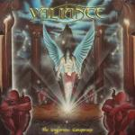

|
|
||
Valiance : The Unglorious Conspiracy (2001) |
|

http://www.valiance.it |
1. Betrayal 1:05 |
7/10 |
|
"The Unglorious Conspiracy" es el primer álbum de los italianos Valiance, antes conocidos con el curioso nombre de Tixotropia. Y con decir que son italianos, queda dicho casi todo. Valiance es otra banda italiana haciendo power metal épico, sin los arreglos orquestales que bandas como Rhapsody añaden a su música, pero con cierta profusión de teclados. El disco no está mal. Musicalmente es bastante interesante, original sería mucho decir y las letras van un poco más allá de las típicas historias de batallas y guerreros, explorando desde diversas perspectivas como el destino marca, en cierta forma, nuestras vidas. La producción de este disco no me convence nada. La batería suena muy apagada, y aún así las guitarras no se oyen muy bien. Los teclados llevan la melodía con demasiada preponderancia y las guitarras están quizás demasiado subordinadas a ellos. Finalmente ciertos arreglos parecen metidos con calzador y no terminan de sonar como una parte más de las canciones. La voz de Carmine Gottardo tampoco es lo mejor de esta banda. Es un poco más gutural de lo que quizás debería ser, recuerda un poco a la de Kai Hansen, y aunque es lo bastante contundente para el estilo de la banda, da la sensación de que algunas veces los teclados le roban demasiado protagonismo, sobre todo en tonos altos, aunque quizás esto se deba a la deficiente producción. Y en cuanto a la presentación, la portada peca de ser un poco simplista, aunque la idea está bien, el libreto con las letras es bastante soso y la contraportada es de lo menos trabajado que he visto en mucho tiempo. En suma, que a este disco se le nota demasiado que es un primer disco y, empezando sobre todo por la producción, Valiance deberá mejorar bastante si quiere empezar a acercarse a la altura de los mejores grupos italianos. El disco comienza con "Betrayal" una introducción musical con coros y teclados, que no está mal. "Swords Made of Me" es una canción potente, y que combina con acierto los teclados y las guitarras, aunque en algunos momentos resulta un tanto caótica. El terce corte del álbum, "Sleeper's Reign", pasaría desapercibido si no fuera por un estribillo que destaca con fuerza sobre el resto de la canción. Tras un par de canciones sin historia, la sexta pista del disco, "Clouds of Insanity", es una instrumental interesante, con distintas partes y ritmos diferentes, que rompe con acierto la monotonía de las dos canciones anteriores. "Sandful Eyes" es una canción interesante, con varios cambios de ritmos y un estribillo a varias voces que suena convincentemente épico. "Livin' Throughout Time" es de nuevo una canción previsible, con un estribillo que llama la atención por su fuerza y unos solos de guitarra que irrumpen con imparable energía en el corazón del oyente. "King of Toys" destaca por un estribillo bastante pegadizo y de nuevo unos solos de guitarra que seguro que sobrepasan los límites de velocidad establecidos en cualquier país civilizado. "Ancestral Quest" explota varios cambios de ritmo y una buena melodía para llegar al oyente con cierta facilidad. Es una canción bastante épica, tanto por la letra como por la abundancia de coros y teclados, que por cierto tienden a ocultar a las guitarras. Cierra este disco "Towards Silence", una canción instrumental, con sonido de guitarra acústica y cierto aire medieval. |
||
Rubén Béjar |
||